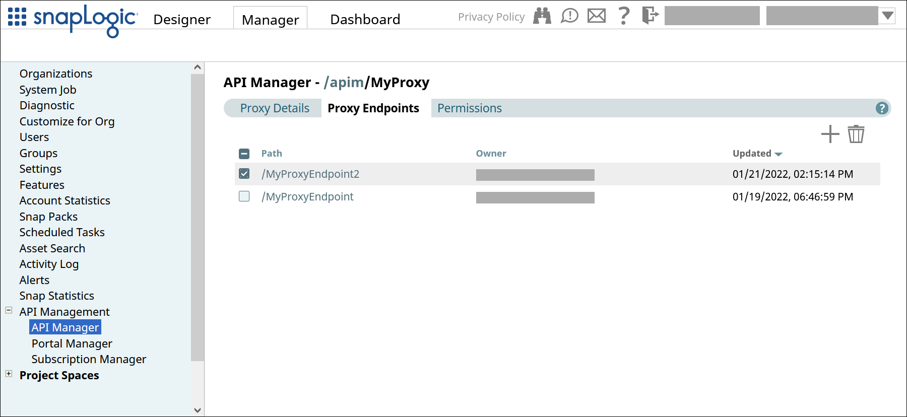
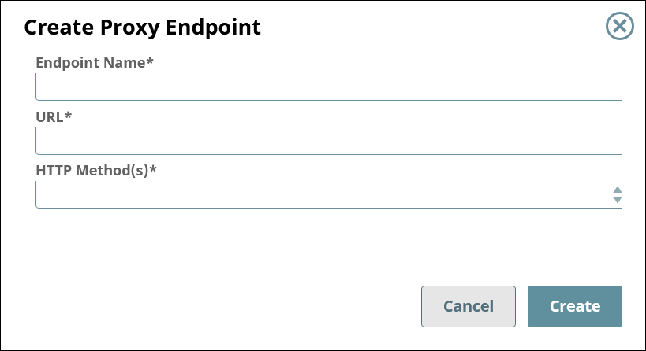
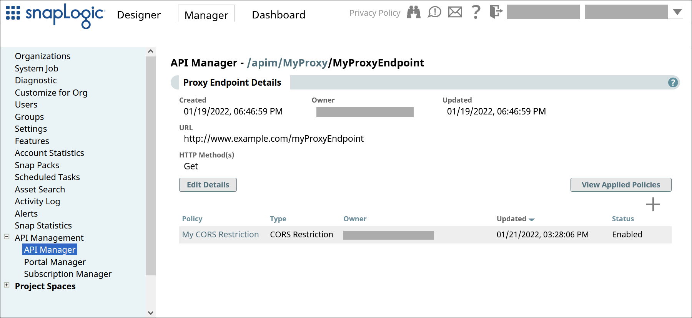

Proxy Endpoints
View and edit the endpoints for your proxy.
Overview
Proxy endpoints allow users to access your APIs and third-party APIs.
Prerequisites
- Org Admin permissions
Viewing the List of Endpoints
To view the list of endpoints for a proxy,
- In SnapLogic Manager, go to .
- In the API Manager, go to the APIs & Proxies tab.
- Set Filter by Type to Proxy and click Search.
- Click the proxy's name in the list.
- Go to the Proxy Endpoints tab.

Creating an Endpoint
To create an endpoint,
- In the API Manager, open a proxy for editing, then go to the Proxy Endpoints tab.
- Click the plus icon ().
- Configure the new endpoint.

Field Description Endpoint Name The name for your proxy's endpoint. - Must be unique.
- Must begin with alphanumeric characters A-Z, a-z, or 0-9.
- Cannot contain |, <, >, [, ], {, }, #, ?, /, and \.
- Must be no more than 256 characters. If the name includes double-byte characters, the maximum length is shorter.
URL The URL to which users send their requests. Example:
https://www.example.com/path/to/the/apiHTTP Method(s) One or more REST methods for the API that this endpoint will service. - Get
- Put
- Head
- Post
- Patch
- Delete
Editing an Endpoint
To edit an endpoint,
- In the API Manager, open a proxy for editing, then go to the Proxy Endpoints tab.
- Click the endpoint's name in the list.

Learn more: Proxy Endpoint Details
- To edit the proxy details, click the Edit Details button.
Note: You can update only the URL and HTTP Method(s) of the endpoint.
- To apply security policies to the endpoint, click the plus icon () below the View Applied Policies button.
Deleting an Endpoint
To delete an endpoint,
- In the API Manager, open a proxy for editing, then go to the Proxy Endpoints tab.
- Check the box for the endpoint to delete.
- Click the trash icon ().